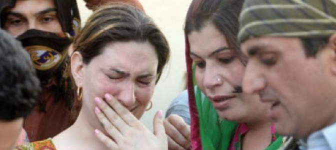

")
(تحریر: سعد رضا)
1) انہیں گھروں سے نکال دو
ایک ہیجڑا محمد صلعم کی ازواج کے گھروں میں آتا جاتا تھا۔ ایک دن اس نے حضور کے سامنے کسی عورت کے پیٹ پر پڑنے والے بل کا تذکرہ کرتے ہوئے اس کی خوبصورتی بیان کر دی تو حضور صلعم نے فرمایا:
"یہ (ہیجڑے) تمھارے ہاں داخل نہ ہوا کریں۔"
(صحیح مسلم، کتاب السلام، باب منع المحنث من الدخول علی النساء الاجانب، حدیث 2180)
ایک اور روایت میں ہے کہ "آئیندہ یہ لوگ تمھارے گھروں میں نہ آیا کریں۔"
(صحیح بخاری، کتاب المغازی، باب غزوۃ الطائف فی شوال۔۔۔، حدیث 4324)
2) آبادی سے دور شہر بدر کر دیا جائے
اس ہیجڑے کو صرف اتنی سی بات پر نہ صرف گھروں میں داخل ہونے سے روک دیا گیا بلکہ "اسے (مدینہ کی آبادی سے دور) نکال دیا گیا۔ چنانچہ وہ مقام بیداء میں رہتا تھا اور ہر جمعہ کو آ کر کھانے پینے کی چیزیں مانگ کر لے جایا کرتا۔"
(سنن ابو داؤد، کتاب اللباس، باب فی قولہ تعالیٰ: غیر اولی الاربۃ، حدیث 4109)
3) بھیک مانگ کر گزارہ کریں
کچھ لوگوں نے اس پر کہا: "اے اللہ کے رسول! (اگر اسے اس طرح دور رہنے پر مجبور کر دیا گیا تو) یہ بھوک سے ہی مر جائے گا۔ تب آپ صلعم نے اسے اجازت دی کہ ہر ہفتے دو بار آ جایا کرے، لوگوں سے سوال کرے (یعنی بھیک مانگے، مانگ تانگ کر ضرورت پوری کرے) اور واپس لوٹ جایا کرے۔"
(سنن ابو داؤد، کتاب اللباس، باب فی قولہ تعالیٰ: غیر اولی الاربۃ، حدیث 4110)
4) باندی عورت کے جسم کے بیان پر ہیجٖڑوں کی شہر بدری
ہیجڑے کا داخلہ گھر میں پیغمبر نے صرف اس لیے منع کر دیا کیونکہ وہ جنگ میں ایک عورت کے باندی بننے کے بعد اس کی خوبصورتی کی وجہ سے اس کو حاصل کرنے کی صلاح دے رہا تھا۔
صحیح بخاری، کتاب الغزوات (لنک):
ام سلمہ کہتے ہیں کہ میرے پاس ایک مخنث بیٹھا ہوا تھاپھر آنحضرت نے سنا کہ وہ عبد اللہ بن امیہ سے کہہ رہا تھاکہ اے عبد اللہ ! دیکھو اگر کل اللہ تعالیٰ نے طائف کی فتح تمہیں عطا فرمائی تو غیلان بن سلمہ کی بیٹی ( بادیہ نامی ) کو (بطور باندی) لے لینا کیونکہ وہ (اتنی خوبصورت اور گداز ہے کہ) جب سامنے آتی ہے تو پیٹ پر چار بل اور پیٹھ موڑ کر جاتی ہے تو آٹھ بل دکھائی دیتے ہیں تو آنحضرت صلی اللہ علیہ وسلم نے فرمایا یہ ہیجڑے لوگ اب تمہار ے گھر میں نہ آیا کریں ۔
انتہائی حیرت کی بات ہے کہ:
٭ باندی عورت کو اسلام بازاروں میں آدھا ننگا بکواتا ہے، اس کے پستان و کمر ننگی ہوتی ہے، اور صرف ناف تا گھٹںون تک ستر ہوتا ہے۔ خریدار ان باندیوں کے جسموں کو بھیڑ بکریوں کے طرح ٹٹول رہے ہوتے ہیں اور کولہے اور پستانوں اور رانوں جیسے نازک نسوانی اعضاء کو ٹٹولنے سے بھی باز نہیں آتے۔
٭ ایسے میں کیا واقعی یہ اس ہیجڑے کا اتنا بڑا جرم تھا کہ جس کی پاداش میں اسلامی ریاست میں آنے والی تمام صدیوں میں پیدا ہونے والے لاکھوں کڑوڑوں دیگر ہیجڑوں کا ہمیشہ کے لیے گھروں میں داخلہ ممنوع ہو جاتا؟
٭ اور کیا صرف ہیجڑے ہی دوسری عورتوں کی خوبصورتی کو بیان کر سکتے ہیں؟ کیا عورتوں کے لیے یہ ممکن نہیں ہے کہ وہ دوسری عورتوں کی خوبصورتی کو بیان کر سکیں؟ تو کیا ان عورتوں کا داخلہ بھی گھروں سے ممنوع کر کے ہر ہر عورت کو شہر بدر کر کے تنہائی کی زندگی گذارنے پر مجبور کیا جائے؟
٭ کیا پیغمبر کے لیے یہ ممکن نہ تھا کہ 'پہلی دفعہ' یہ کام کرنے پر شہر بدری اور تنہائی کی زندگی جیسی سخت سزا دینے کی بجائے اس کا اسلامی حکم بیان کرتے کہ دوسری عورتوں کی خوبصورتی کو بیان نہ کیا جائے (اور یہ تنبیہ صرف ہیجڑوں کو ہی نہیں، بلکہ عورتوں اور مردوں کو بھی ہوتی)؟ مگر پیغمبر تو ظلم کی انتہا کرتے ہوئے ایک انسان سے اس کی زندگی کی تمام مسرتیں چھین ڈال رہے ہیں، اس اس کے رشتے داروں سے دور کر رہے ہیں، اس کے گھر سے اسے دور کر رہے ہیں، اسے ذلت آمیز بھیک مانگنے والی زندگی پر مجبور کر رہے ہیں، اسے تنہائی کے عذاب کی سزا دے رہے ہیں۔
٭ ہونا تو یہ چاہیے تھا کہ پیغمبر دعا کرتے کہ اے اللہ آئندہ کسی کو ہیجڑا پیدا نہ کرنا اور یہ بات تو پیغمبر اور اللہ کے اختیار میں ہے ہیجڑا اپنی مرضی سے تو ہیجڑا پیدا نہیں ہوا۔
چنانچہ انسانیت سوال کرتی ہے کہ:
- نبی نے بے چارے ہیجڑے کو ایک چھوٹی سے غلطی پر اس کی تصحیح کر کے معاملے کو ختم کیوں نہ کر دیا؟
- کیوں اسے شہر بدر کر کے قیدِ تنہائی کی سزا دی، اور وہ بھی ساری عمر کے لیے؟
- کیوں اسے بھیک مانگنے پر مجبور کر کے ذلیل و رسوا کیا، اور وہ بھی پوری زندگی کے لیے؟
- کیا اللہ نامی شے کو پتا نہیں تھا کہ محمد کی سنت کی پیروی میں پھر اگلے 1400 سالوں تک ہیجڑے بے چارے شہر بدر کیے جائیں گے، اور وہ بھیک مانگنے پر مجبور ہوں گے، اور انسانیت یوں تار تار ہوتی رہے گی؟
5) مہندی لگا کرعورت کی مشابہت اختیار کرنے پر شہر بدری/قتل کا حکم
سنن ابو داؤد، کتاب الادب (لنک):
سیدنا ابوہریرہ رضی اللہ عنہ سے روایت ہے کہ نبی کریم صلی اللہ علیہ وسلم کے پاس ایک ہیجڑا لایا گیا جس نے اپنے ہاتھ پاؤں مہندی سے رنگے ہوئے تھے ۔ نبی کریم صلی اللہ علیہ وسلم نے اس کے متعلق دریافت فرمایا ” اسے کیا ہے ؟ “ بتایا گیا کہ اے اﷲ کے رسول ! یہ عورتوں کے ساتھ مشابہت کرتا ہے ۔ تو آپ صلی اللہ علیہ وسلم نے حکم دیا اور اسے مقام نقیع کی طرف نکال باہر کر دیا گیا ۔ صحابہ رضی اللہ عنہم نے کہا : اے اﷲ کے رسول ! کیا ہم اسے قتل نہ کر دیں ؟ آپ صلی اللہ علیہ وسلم نے فرمایا ” مجھے نمازیوں کو قتل کرنے سے منع کیا گیا ہے ۔ “ ابواسامہ کہتے ہیں کہ نقیع ( نون کے ساتھ ) مدینہ سے ایک جانب ایک جگہ کا نام ہے جو بقیع سے الگ ہے ۔
انسانی فطرت کے مطابق ہیجڑوں میں بھی محبت کے جذبات ہوتے ہیں۔ یہ عین ممکن ہے کہ وہ مردوں میں کشش محسوس کریں اور عورت کا روپ اختیار کر کے ان کو جذباتی طور پر تسکین ملے۔
اس فطری انسانی جذبے کو ہیجڑوں کا 'جرم' بنا کر انہیں شہر بدر کر ڈالنا، ان کو اپنے گھر والوں سے دور کر ڈالنا، ان کا معاشرتی بائیکاٹ کر ڈالنا ظلم عظیم ہے۔
اس سے زیادہ بڑا ظلم یہ ہے کہ صرف عورت کا بھیس اختیار کرنا ہی ان کے 'قتل' کے لیے کافی ہے۔ یہ ہیجڑے قتل سے اس لیے نہیں بچے کہ عورت کا بھیس اختیار کرنا قتل سے کم درجے کا جرم تھا، بلکہ اس لیے بچ پائے کہ وہ نماز پڑھتے تھے۔ چنانچہ اگر کوئی ہیجڑہ بے نمازی ہو، یا پھر غیر مسلم ہو، اور پھر وہ عورت کا بھیس اختیار کرے، تو پھر اسے پیغمبر قتل ہی کروا ڈالتے۔
